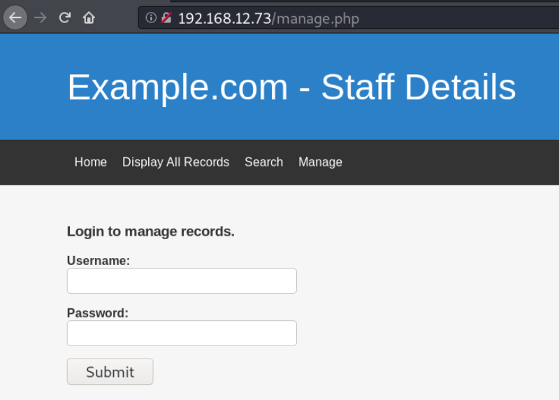
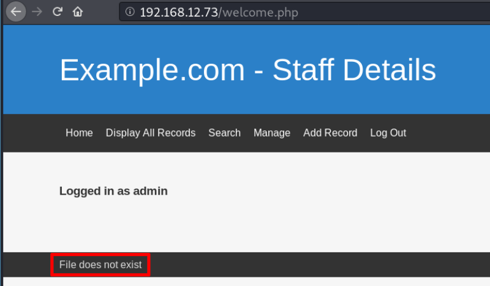

3.3 Login
Login into the system.
a) Go to http://192.168.12.73/ and click on “Manage”

b) Introduce “admin” credentials.
Username: admin
Password: transorbital1

We can see there's a file left at the foot of the page.
This means there must be a file that was being included to the footer which is now missing or misplaced. We know that where we have the include function, we have a probability of finding an LFI Vulnerability.
 Index
Index